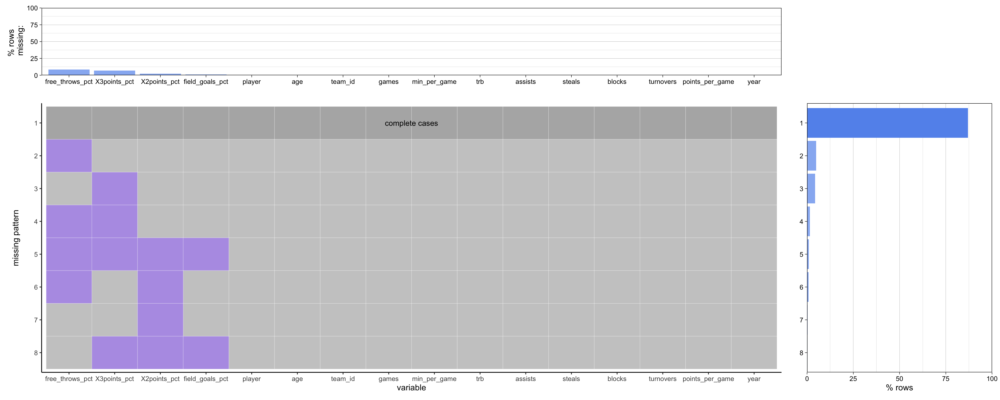
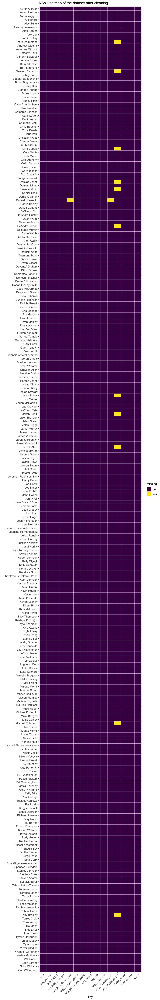

Chapter 3 Data
3.1 Sources
We scrape our data from the BasketBall Reference, where we focus on players’ performance in these aspects, rank，player，position，age，team，start games，field goals，field attempts，field precision，3-points，3-points attemps，3-points precision，2-points，2-points attemps，2-points precision，free-throws，free-throws attemps，free-throws precision，rebounds，assists，steals，blocks，turnovers，fouls and points per game. For their salaries, Basketball Reference doesn’t provide the historical archive, so we use the mean of the current contracts as evaluator, ignoring the guaranteed.
3.2 Cleaning / transformation
We cleaned player_stat_total.csv and player_contract.csv separately and then merged the two datasets together. A preview of these two datasets is included in the proposal.
Player Statistics Data Cleaning
For player_stat_total.csv, we first dropped the player statistics collected before 2020. And then we dropped several columns that are unrelated to the contract salaries of the NBA players, including X, rank, pos (position of each player), and personal_fouls. X and rank are just two columns showing the index of each row, so we simply removed them. We dropped the position column because some players switch between multiple positions, which might cause confusion. For example, Stephen Curry plays PG and SG at the same time. The personal_fouls variable is not a meaningful indicator either, as it is impacted by too many unexpected variables, and the information about player performance could be better demonstrated by other variables.
We also dropped columns that are redundant, including field_goals, field_goals_attempts, X3points, X3_points_attempts, X2points, X2points_attempts, freethrows, freethrows_attempts, orb (offensive rebound percentage), drb (defensive rebound percentage). These variables are either transformed into percentages in other columns (for example, field_goal_pct = field_goals_attempts/field_goals*100%, so we only kept field_goal_pct, and dropped field_goals_attempts as well as field_goals), or that the information has already been addressed in other columns (for example, trb (total rebound percentage) = orb (offensive rebound percentage) + drb (defensive rebound percentage), so we only kept trb). We also dropped players that have played fewer than 20 games in total from 2021 to 2022, since the statistics are less meaningful when the number of games is too small.
The next step was to calculate the weighted average of each variable. We multiplied them by the ratio of the number of games per season to the total number of games of each player from 2021 to 2022. After this step, the player column becomes unique, meaning that one row corresponds to one specific player.
The last step of cleaning player_stat_total.csv was to split the players into three groups by their age, as there are age limitations and restrictions for athletes. We categorize them into young, middle, and old categories according to the thresholds 25 and 33
Here is a preview of the cleaned player_stat_total.csv:
## # A tibble: 6 × 14
## player sum_g…¹ avg_m…² avg_f…³ avg_X…⁴ avg_X…⁵ avg_f…⁶ avg_trb avg_a…⁷ avg_s…⁸
## <chr> <int> <dbl> <dbl> <dbl> <dbl> <dbl> <dbl> <dbl> <dbl>
## 1 Aaron… 175 29.4 0.489 0.331 0.566 0.695 5.77 2.9 0.643
## 2 Aaron… 38 16.5 0.441 0.365 0.477 0.834 1.68 2.14 0.666
## 3 Aaron… 35 24.2 0.463 0.304 0.573 0.729 3.6 1.4 0.6
## 4 Al Ho… 97 28.8 0.462 0.345 0.561 0.835 7.41 3.4 0.758
## 5 Al-Fa… 28 20.2 0.394 0.221 0.492 0.821 5.1 1.5 0.9
## 6 Alec … 49 28.3 0.394 0.405 0.383 0.825 4.87 2.92 0.959
## # … with 4 more variables: avg_blocks <dbl>, avg_turnovers <dbl>,
## # avg_points_per_game <dbl>, age <fct>, and abbreviated variable names
## # ¹sum_games, ²avg_min_per_game, ³avg_field_goal_pct, ⁴avg_X3points_pct,
## # ⁵avg_X2points_pct, ⁶avg_free_throws_pct, ⁷avg_assists, ⁸avg_stealsPlayer Contract Salary Data Cleaning
The original player contract dataset includes players’ name, team and their yearly contract salaries until 2028. Since the contract salary column was in character format, we transformed these columns into the numerical format. After that, we utilized mutate() function to add an additional column of contract salary mean by taking the average of all the contract salaries for each player.
Here is a preview of the cleaned player_contract.csv:
## player team Salary2022_2023 Salary2023_2024 Salary2024_2025
## 2 Stephen Curry GSW 48070014 51915615 55761216
## 3 Russell Westbrook LAL 47063478 NA NA
## 4 LeBron James LAL 44474988 53369986 57639585
## 5 Kevin Durant BRK 44119845 47649433 51179021
## 6 Bradley Beal WAS 43279250 46741590 50203930
## 7 Damian Lillard POR 42492492 45640084 48787676
## Salary2025_2026 Salary2026_2027 Salary2027_2028 Guaranteed ID
## 2 59606817 NA NA 215353662 curryst01
## 3 NA NA NA 47063478 westbru01
## 4 NA NA NA 97844974 jamesle01
## 5 54708609 NA NA 197656908 duranke01
## 6 53666270 57128610 NA 193891040 bealbr01
## 7 58545211 63228828 NA 195465463 lillada01
## SalaryMean
## 2 95659328
## 3 47063478
## 4 69618182
## 5 87798493
## 6 80326288
## 7 82333452Final Dataset After Cleaning
Finally, we utilized merge() function to left join the cleaned player statistic dataset and cleaned player contract dataset by player name to get a final merged dataset for our project.We dropped the guaranteed salary column because it is a redundant variable, as all the contracts signed will be guaranteed for the remainder of the season. We also dropped the player id column as we already have the player name column to represent each player. Lastly, we simply divide the SalaryMean by 10000000 to make it more readable.
And here’s a preview of the final cleaned dataset data_merged.csv:
## player sum_games avg_min_per_game avg_field_goal_pct
## 1 Aaron Gordon 175 29.40000 0.4890000
## 2 Aaron Holiday 38 16.53947 0.4414211
## 3 Aaron Wiggins 35 24.20000 0.4630000
## 4 Al Horford 97 28.75361 0.4620928
## 5 Alec Burks 49 28.29388 0.3939592
## 6 Aleksej Pokusevski 40 23.00000 0.3611000
## avg_X3points_pct avg_X2points_pct avg_free_throws_pct avg_trb avg_assists
## 1 0.3308571 0.5660000 0.6950000 5.771429 2.900000
## 2 0.3651316 0.4772895 0.8345000 1.678947 2.136842
## 3 0.3040000 0.5730000 0.7290000 3.600000 1.400000
## 4 0.3452371 0.5612165 0.8350722 7.411340 3.400000
## 5 0.4051224 0.3827959 0.8254694 4.869388 2.918367
## 6 0.2827000 0.4315000 0.7266000 4.850000 2.170000
## avg_steals avg_blocks avg_turnovers avg_points_per_game age team
## 1 0.6428571 0.6571429 1.871429 13.514286 Middle DEN
## 2 0.6657895 0.1552632 1.047368 6.428947 Young ATL
## 3 0.6000000 0.2000000 1.100000 8.300000 Young OKC
## 4 0.7577320 1.1845361 0.928866 11.354639 Old BOS
## 5 0.9591837 0.3000000 1.089796 11.802041 Middle DET
## 6 0.4600000 0.8100000 1.990000 8.020000 Young OKC
## SalaryMean
## 1 3.2686909
## 2 0.1836090
## 3 0.1912347
## 4 1.9500000
## 5 1.0251200
## 6 0.66403733.3 Missing value analysis
Missing Value Plot for Messy Data

We made a missing value plot using plot_missing() function from the redav package to visualize the pattern of the missing value in our original dataset. We discovered that columns of free_throws_pct and x3point_pct have the most number of rows missing.
Missing Value Heatmap for Data After Cleaning

After cleaning the data, as demonstrated in section 3.2, we got the tidy and representative data. We created the missing value heatmap according to the cleaned data using ggplot function to visualize missing values in each variable columns for each NBA player. From the heatmap, we observed that there are very little missing data in our dataset after data cleaning, demonstrating the effectiveness of our preprocessing methods. Column avg_X3points_pct has the most missing values, considering the fact that there are fewer players who have the opportunity to shoot three pointers in a game. Thus, we filled the missing values with zeros, e.g. Ivica Zubac and Jarrett Allen with no three pointers percision records are considered as not making any three pointers.